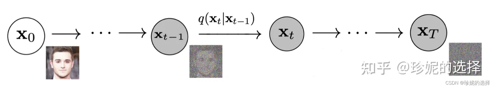
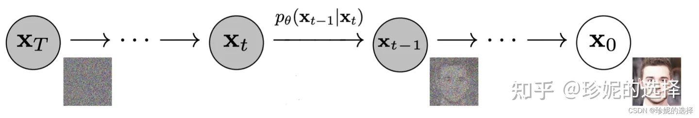
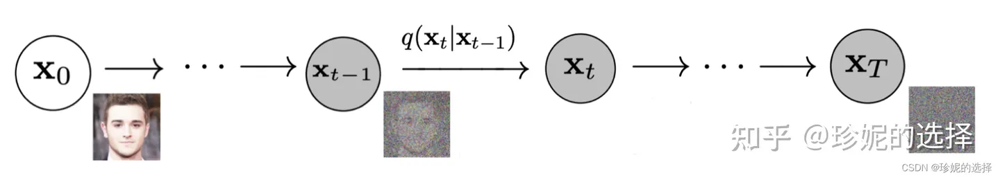
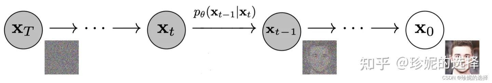

Diffusion Model
参考链接：
Diffusion Model在前向阶段对图像逐步施加噪声, 直至图像被破坏成完全的高斯噪声, 然后在逆向阶段学习从高斯噪声还原为原始图像。


参考链接：
Diffusion Model在前向阶段对图像逐步施加噪声, 直至图像被破坏成完全的高斯噪声, 然后在逆向阶段学习从高斯噪声还原为原始图像。


From here you can search these documents. Enter your search terms below.
| Keys | Action |
|---|---|
| ? | Open this help |
| n | Next page |
| p | Previous page |
| s | Search |